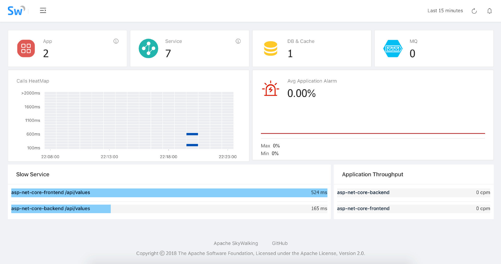
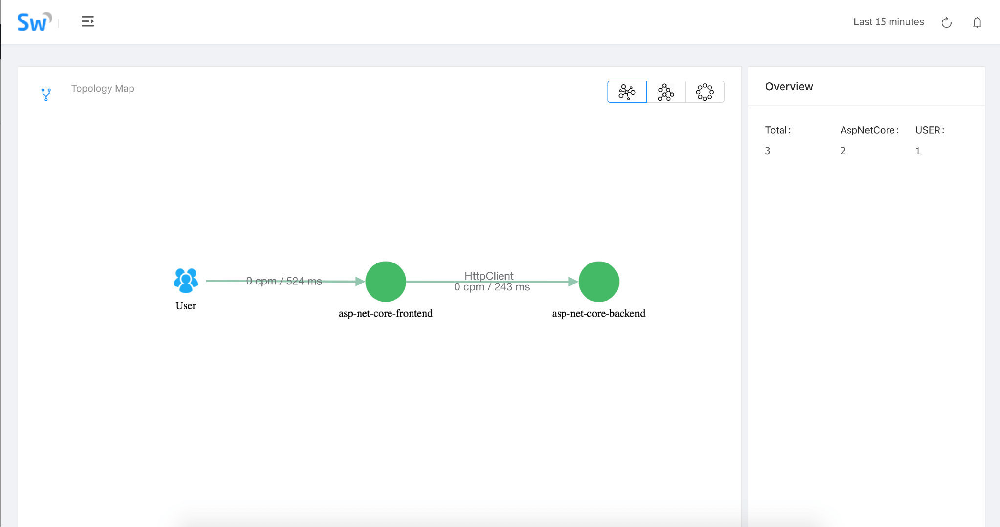
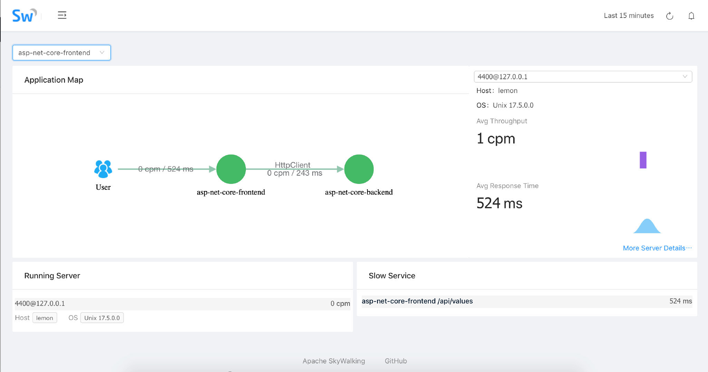
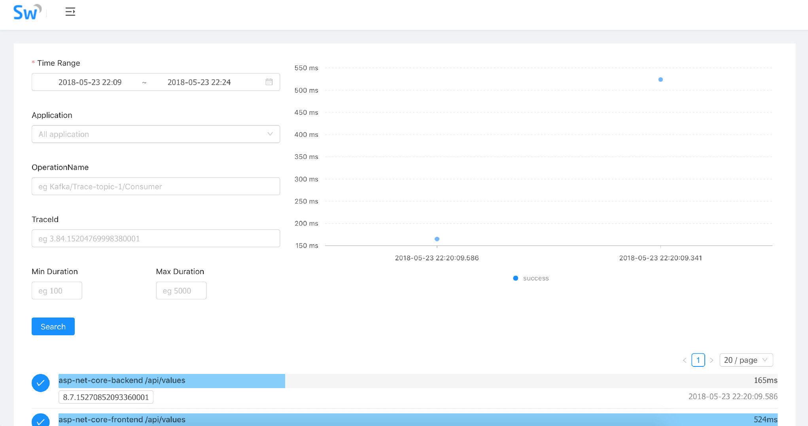
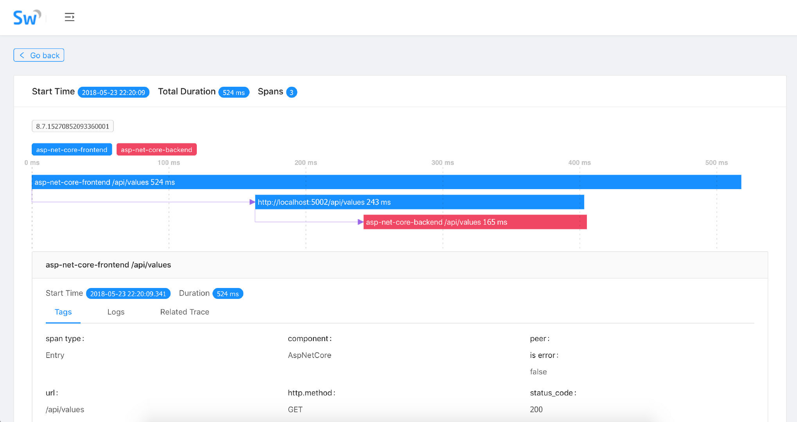

<!doctype html>
<html lang="zh-CN" class="no-js">
  <head>
    <meta charset="utf-8">
<meta name="viewport" content="width=device-width, initial-scale=1, shrink-to-fit=no">
<meta name="twitter:site" content="skywalking.apache.org">
<meta name="twitter:image:src" content="https://skywalking.apache.org/images/skywalking_400x400.png">
<meta property="og:image" content="https://skywalking.apache.org/images/skywalking_400x400.png">

<meta name="generator" content="Hugo 0.159.0">

<META NAME="ROBOTS" CONTENT="INDEX, FOLLOW">
<link rel="stylesheet" href="/css/iconfont/iconfont.css">


<link rel="apple-touch-icon" sizes="180x180" href="/favicons/apple-touch-icon.png">
<link rel="icon" type="image/png" sizes="32x32" href="/favicons/favicon-32x32.png">
<link rel="icon" type="image/png" sizes="16x16" href="/favicons/favicon-16x16.png">
<link rel="manifest" href="/favicons/site.webmanifest">
<link rel="mask-icon" href="/favicons/safari-pinned-tab.svg" color="#5bbad5">
<meta name="msapplication-TileColor" content="#da532c">
<meta name="theme-color" content="#ffffff">
<title>Apache SkyWalking 为.NET Core带来开箱即用的分布式追踪和应用性能监控 | Apache SkyWalking</title><meta property="og:url" content="https://skywalking.apache.org/zh/2018-05-24-skywalking-net/">
  <meta property="og:site_name" content="Apache SkyWalking">
  <meta property="og:title" content="Apache SkyWalking 为.NET Core带来开箱即用的分布式追踪和应用性能监控">
  <meta property="og:description" content="SkyWalking .NET Core SDK 现已可用。">
  <meta property="og:locale" content="en">
  <meta property="og:type" content="article">
    <meta property="article:section" content="zh">
    <meta property="article:published_time" content="2018-05-24T00:00:00+00:00">
    <meta property="article:modified_time" content="2026-08-31T08:04:38+08:00">

  <meta itemprop="name" content="Apache SkyWalking 为.NET Core带来开箱即用的分布式追踪和应用性能监控">
  <meta itemprop="description" content="SkyWalking .NET Core SDK 现已可用。">
  <meta itemprop="datePublished" content="2018-05-24T00:00:00+00:00">
  <meta itemprop="dateModified" content="2026-08-31T08:04:38+08:00">
  <meta itemprop="wordCount" content="142">
  <meta itemprop="keywords" content="DotNetCore,Agent">
  <meta name="twitter:card" content="summary">
  <meta name="twitter:title" content="Apache SkyWalking 为.NET Core带来开箱即用的分布式追踪和应用性能监控">
  <meta name="twitter:description" content="SkyWalking .NET Core SDK 现已可用。">


<link rel="preload" href="/scss/main.min.9ebc1aad14a60beb4f2d187cb59e63ec25323bd8334eef48cd5d0d2aaab610bd.css" as="style">
<link href="/scss/main.min.9ebc1aad14a60beb4f2d187cb59e63ec25323bd8334eef48cd5d0d2aaab610bd.css" rel="stylesheet" integrity="">


<link rel="stylesheet" href="/css/docSearch.css" />
<link rel="stylesheet" href="/css/highlight-github.css" />


<script src="/js/jquery-3.6.0.min.js"></script>

<link rel="canonical" href="https://skywalking.apache.org/zh/2018-05-24-skywalking-net/">
<meta name="description" content="SkyWalking .NET Core SDK 现已可用。">
<link rel="alternate" hreflang="en" href="https://skywalking.apache.org/blog/2018-05-24-skywalking-net/">
<link rel="alternate" hreflang="zh-CN" href="https://skywalking.apache.org/zh/2018-05-24-skywalking-net/">
<link rel="alternate" hreflang="x-default" href="https://skywalking.apache.org/blog/2018-05-24-skywalking-net/">

<script type="application/ld+json">{"@context":"https://schema.org","@graph":[{"@id":"https://skywalking.apache.org/#organization","@type":"Organization","logo":"https://skywalking.apache.org/images/skywalking_400x400.png","name":"Apache SkyWalking","parentOrganization":{"@type":"Organization","name":"The Apache Software Foundation","url":"https://www.apache.org/"},"sameAs":["https://github.com/apache/skywalking","https://twitter.com/asfskywalking","https://projects.apache.org/project.html?skywalking"],"url":"https://skywalking.apache.org/"},{"@type":"BlogPosting","author":{"@type":"Person","name":"刘浩扬（SkyWalking .NET Core 探针维护者）"},"dateModified":"2026-08-31","datePublished":"2018-05-24","description":"SkyWalking .NET Core SDK 现已可用。","headline":"Apache SkyWalking 为.NET Core带来开箱即用的分布式追踪和应用性能监控","inLanguage":"zh-CN","mainEntityOfPage":{"@id":"https://skywalking.apache.org/zh/2018-05-24-skywalking-net/","@type":"WebPage"},"publisher":{"@id":"https://skywalking.apache.org/#organization"},"url":"https://skywalking.apache.org/zh/2018-05-24-skywalking-net/"}]}</script>


<link rel="alternate" type="application/rss+xml" href="https://skywalking.apache.org/zh/feed.xml" title="博客 — Apache SkyWalking">
<link rel="alternate" type="application/rss+xml" href="https://skywalking.apache.org/feed.xml" title="Apache SkyWalking">


    <style>.blog-label[data-label="Release"]{background:#e6f6ec;color:#1a7f43;border-color:#bfe8cd;}
.blog-label[data-label="AI"]{background:#fde8f3;color:#be2069;border-color:#f8cbe2;}
.blog-label[data-label="Tracing"]{background:#fdecde;color:#c2580d;border-color:#f6d4ba;}
.blog-label[data-label="Metrics"]{background:#e2f1fd;color:#1d6fb8;border-color:#c4e1f7;}
.blog-label[data-label="Logging"]{background:#f0e7fd;color:#7c3aed;border-color:#ddccfa;}
.blog-label[data-label="Profiling"]{background:#def5e7;color:#11814b;border-color:#bce8cf;}
.blog-label[data-label="Storage"]{background:#e0f7fa;color:#0e7490;border-color:#bdeaf1;}
.blog-label[data-label="Agents"]{background:#e8eafd;color:#4f46e5;border-color:#d3d7fa;}
.blog-label[data-label="Cloud Native"]{background:#e6f3fe;color:#0369a1;border-color:#c5e4fb;}
.blog-label[data-label="Engineering"]{background:#fef3e2;color:#b45309;border-color:#fbe0bb;}
.blog-label[data-label="Community"]{background:#eef1f5;color:#5b6573;border-color:#e1e6ee;}
</style>

  </head>
  <body class="td-page td-blog">
    <header>
      
<nav class="js-navbar-scroll navbar navbar-expand  flex-column flex-md-row td-navbar">
    <div class="sidebar-button">
      <i class="iconfont icon-menu"></i>
    </div>
    <a class="navbar-brand" href="/">
        <span class="navbar-logo"></span> 
    </a>
    <div class="td-navbar-nav-scroll navbar-nav-wrapper" id="navigation">
        <ul class="navbar-nav mt-lg-0">
             
            
            <li class="nav-item mr-3 mb-lg-0">
				
				
				
				
				
				
				<a class="nav-link" href="/docs" ><span>Documentation</span></a>
			</li>
            
            
            
            <li class="nav-item mr-3 mb-lg-0">
				
				
				
				
				
				
				<a class="nav-link" href="/events" ><span>Events</span></a>
			</li>
            
            
            
            <li class="nav-item mr-3 mb-lg-0">
				
				
				
				
				
				
				<a class="nav-link" href="/blog" ><span>Blogs</span></a>
			</li>
            
            
            
            <li class="nav-item mr-3 mb-lg-0">
				
				
				
				
				
				
				<a class="nav-link" href="/downloads" ><span>Downloads</span></a>
			</li>
            
            
            
            <li class="nav-item mr-3 mb-lg-0">
				
				
				
				
				
				
				<a class="nav-link" href="/team" ><span>Team</span></a>
			</li>
            
            
            
            <li class="nav-item mr-3 mb-lg-0">
				
				
				
				
				
				
				<a class="nav-link" href="/users" ><span>Users</span></a>
			</li>
            
            
            
            
            
            
            <li class="nav-item mr-3 mb-lg-0">
                <a class="nav-link active" href="/zh/"><span class="active">中文博客</span></a>
            </li>

            
			
        </ul>
    </div>

    <div class="navbar-nav d-none d-lg-block search-input-box">
        
<div id="docsearch"></div>


            
        
            
        
            
        
            
        
            
        
            
        
            
            <span class="link dropdown sw-navdd">
                <a class="link-name nav-link dropdown-toggle sw-navdd-toggle" href="#" role="button" data-toggle="dropdown" aria-haspopup="true" aria-expanded="false">
                     Apache
                </a>
                <div class="dropdown-menu sw-navmenu sw-navmenu--wide">
                    <div class="sw-navmenu-head">
                        
                        <div><strong>The Apache Software Foundation</strong><span>governance · trademarks · sponsorship</span></div>
                    </div>
                    
                    
                    <a class="sw-navmenu-item" href="http://www.apache.org/" target="_blank" rel="noopener noreferrer">
                        <span>Apache Software Foundation</span>
                        <em>www.apache.org</em>
                        <i class="iconfont icon-arrow-up-right"></i>
                    </a>
                    
                    
                    <a class="sw-navmenu-item" href="https://github.com/apache/skywalking/issues" target="_blank" rel="noopener noreferrer">
                        <span>GitHub Issue Tracker</span>
                        <em>github.com</em>
                        <i class="iconfont icon-arrow-up-right"></i>
                    </a>
                    
                    
                    <a class="sw-navmenu-item" href="https://github.com/apache/skywalking/discussions" target="_blank" rel="noopener noreferrer">
                        <span>Discussion</span>
                        <em>github.com</em>
                        <i class="iconfont icon-arrow-up-right"></i>
                    </a>
                    
                    
                    <a class="sw-navmenu-item" href="https://lists.apache.org/list.html?dev@skywalking.apache.org" target="_blank" rel="noopener noreferrer">
                        <span>Dev Mailing List</span>
                        <em>lists.apache.org</em>
                        <i class="iconfont icon-arrow-up-right"></i>
                    </a>
                    
                    
                    <a class="sw-navmenu-item" href="https://cwiki.apache.org/confluence/display/SKYWALKING/Home" target="_blank" rel="noopener noreferrer">
                        <span>WIKI</span>
                        <em>cwiki.apache.org</em>
                        <i class="iconfont icon-arrow-up-right"></i>
                    </a>
                    
                    
                    <a class="sw-navmenu-item" href="http://www.apache.org/licenses/" target="_blank" rel="noopener noreferrer">
                        <span>License</span>
                        <em>www.apache.org</em>
                        <i class="iconfont icon-arrow-up-right"></i>
                    </a>
                    
                    
                    <a class="sw-navmenu-item" href="http://www.apache.org/events/current-event" target="_blank" rel="noopener noreferrer">
                        <span>Apache Events</span>
                        <em>www.apache.org</em>
                        <i class="iconfont icon-arrow-up-right"></i>
                    </a>
                    
                    
                    <a class="sw-navmenu-item" href="http://www.apache.org/security/" target="_blank" rel="noopener noreferrer">
                        <span>Security</span>
                        <em>www.apache.org</em>
                        <i class="iconfont icon-arrow-up-right"></i>
                    </a>
                    
                    
                    <a class="sw-navmenu-item" href="http://www.apache.org/foundation/sponsorship.html" target="_blank" rel="noopener noreferrer">
                        <span>Sponsor and Donate</span>
                        <em>www.apache.org</em>
                        <i class="iconfont icon-arrow-up-right"></i>
                    </a>
                    
                    
                    <a class="sw-navmenu-item" href="http://www.apache.org/foundation/thanks.html" target="_blank" rel="noopener noreferrer">
                        <span>Thanks</span>
                        <em>www.apache.org</em>
                        <i class="iconfont icon-arrow-up-right"></i>
                    </a>
                    
                    
                    <a class="sw-navmenu-item" href="https://apache.org/foundation/policies/privacy.html" target="_blank" rel="noopener noreferrer">
                        <span>Privacy</span>
                        <em>apache.org</em>
                        <i class="iconfont icon-arrow-up-right"></i>
                    </a>
                    
                </div>
            </span>
            
        
    </div>
</nav>

    </header>
    <div class="container-fluid td-outer">
      <div class="td-main">
        <div class="row container container-center">
          <main class="col-12 col-md-12 col-xl-9 pl-md-4 pr-md-4" role="main">
            
<div class="td-content">
  <h1>Apache SkyWalking 为.NET Core带来开箱即用的分布式追踪和应用性能监控</h1>
  <div class="lead">SkyWalking .NET Core SDK 现已可用。</div>
  <div class="td-byline mb-3">
    By <b>刘浩扬（SkyWalking .NET Core 探针维护者）</b> |
    <time datetime="2018-05-24" class="text-muted">Thursday, May 24, 2018</time>
  </div>
  
  <p>在大型网站系统设计中，随着分布式架构，特别是微服务架构的流行，我们将系统解耦成更小的单元，通过不断的添加新的、小的模块或者重用已经有的模块来构建复杂的系统。随着模块的不断增多，一次请求可能会涉及到十几个甚至几十个服务的协同处理，那么如何准确快速的定位到线上故障和性能瓶颈，便成为我们不得不面对的棘手问题。</p>
<p>为解决分布式架构中复杂的服务定位和性能问题，Google 在论文<a href="http://research.google.com/pubs/pub36356.html">《Dapper, a Large-Scale Distributed Systems Tracing Infrastructure》</a>中提出了分布式跟踪系统的设计和构建思路。在这样的背景下，<a href="https://github.com/apache/incubator-skywalking">Apache SkyWalking</a> 创建于 2015 年，参考 Dapper 论文实现分布式追踪功能，并逐渐进化为一个完整功能的 <a href="https://en.wikipedia.org/wiki/Application_performance_management">Application Performance Management</a> 系统，用于追踪、监控和诊断大型分布式系统，尤其是容器和云原生下的微服务系统。</p>
<p>今年初我在尝试使用.NET Core 构建分布式追踪系统 <a href="https://github.com/liuhaoyang/butterfly">Butterfly</a> 时接触到 SkyWalking 团队，开始和 SkyWalking 团队合作探索 SkyWalking 对.NET Core 的支持，并于 4 月发布 SkyWalking .NET Core 探针的 <a href="https://www.oschina.net/news/95324/apache-skywalking-apm-support-dot-net-core">第一个版本</a>，同时我也有幸加入 SkyWalking 团队共同进行 SkyWalking 在多语言生态的推动。在.NET Core 探针 v0.1 版本发布之后，得到了一些同学的<a href="https://www.jianshu.com/p/3ddd986c7581">尝鲜使用</a>，也得到诸多改进的建议。经过几周的迭代，SkyWalking .NET Core 探针于今天发布 v0.2 release，在 v0.1 的基础上增加了稳定性和 HttpClient 及数据库驱动的追踪支持。</p>
<p>在使用 SkyWalking 对.NET Core 应用追踪之前，我们需要先部署 SkyWalking Collector 收集分析 Trace 和 Elasticsearch 作为 Trace 数据存储。SkyWalking 支持 5.x 的 ES，所以我们需要下载安装对应版本的 ES，并配置 ES 的 <code>cluster.name</code> 为 <code>CollectorDBCluster</code>。然后部署 SkyWalking 5.0 beta 或更高版本 (下载地址:http://skywalking.apache.org/downloads/)。更详细的 Collector 部署文档，请参考 <a href="https://github.com/apache/incubator-skywalking/blob/master/docs/en/Deploy-backend-in-standalone-mode.md">Deploy-backend-in-standalone-mode</a> 和 <a href="https://github.com/apache/incubator-skywalking/blob/master/docs/en/Deploy-backend-in-cluster-mode.md">Deploy-backend-in-cluster-mode</a>。</p>
<p>最后我们使用示例项目来演示在.NET Core 应用中使用 SkyWalking 进行追踪和监控，克隆 SkyWalking-NetCore 项目到本地：</p>
<div class="highlight"><pre tabindex="0" style="background-color:#f7f7f7;-moz-tab-size:4;-o-tab-size:4;tab-size:4;-webkit-text-size-adjust:none;"><code class="language-bash" data-lang="bash"><span style="display:flex;"><span>git clone https://github.com/OpenSkywalking/skywalking-netcore.git
</span></span></code></pre></div><p>进入 skywalking-netcore 目录：</p>
<div class="highlight"><pre tabindex="0" style="background-color:#f7f7f7;-moz-tab-size:4;-o-tab-size:4;tab-size:4;-webkit-text-size-adjust:none;"><code class="language-bash" data-lang="bash"><span style="display:flex;"><span><span style="color:#6639ba">cd</span> skywalking-netcore
</span></span></code></pre></div><p>还原 nuget package：</p>
<div class="highlight"><pre tabindex="0" style="background-color:#f7f7f7;-moz-tab-size:4;-o-tab-size:4;tab-size:4;-webkit-text-size-adjust:none;"><code class="language-bash" data-lang="bash"><span style="display:flex;"><span>dotnet restore
</span></span></code></pre></div><p>启动示例项目：</p>
<div class="highlight"><pre tabindex="0" style="background-color:#f7f7f7;-moz-tab-size:4;-o-tab-size:4;tab-size:4;-webkit-text-size-adjust:none;"><code class="language-bash" data-lang="bash"><span style="display:flex;"><span>dotnet run -p sample/SkyWalking.Sample.Backend
</span></span><span style="display:flex;"><span>dotnet run -p sample/SkyWalking.Sample.Frontend
</span></span></code></pre></div><p>访问示例应用：</p>
<p>打开 SkyWalking WebUI 即可看到我们的应用监控面板 <a href="http://localhost:8080/">http://localhost:8080</a></p>
<p>Dashboard 视图</p>
<p></p>
<p>TopologyMap 视图</p>
<p></p>
<p>Application 视图</p>
<p></p>
<p>Trace 视图</p>
<p></p>
<p>TraceDetails 视图</p>
<p></p>
<h2 id="github">GitHub</h2>
<ul>
<li>SkyWalking Github Repo：<a href="https://github.com/apache/incubator-skywalking/">https://github.com/apache/incubator-skywalking</a></li>
<li>SkyWalking-NetCore Github Repo：https://github.com/OpenSkywalking/skywalking-netcore</li>
</ul>

  
  <ul class="list-unstyled d-flex justify-content-between align-items-center mb-0 pt-5">
  <li>
    <a  class="btn btn-primary  disabled"><span class="mr-1">←</span> Previous</a>
  </li>
    <a href="/zh/2018-12-18-apache-skywalking-5-0-userguide/" class="btn btn-primary ">Next <span class="ml-1">→</span></a>
  </li>
</ul>

</div>


          </main>
          <div class="toc d-none d-xl-block d-md-none col-xl-3 td-toc d-print-none">
            


<div class="td-page-meta ml-2 pb-1 pt-2 mb-0">


</div>


<script>
  $(function () {
    var $toc = $("#TableOfContents");
    if (!$toc || !$toc.length) {
      return;
    }
    var top = $toc.offset().top;
    $(window).on("scroll", debounce(setTop, 100))
    $(window).on("scroll", debounce(addActive, 30))

    function addActive() {
      var scrollValue = $(window).scrollTop();
      var topEle = null;
      $.each($('main h1, main h2, main h3'), function (index, item) {
        if ($(item).offset().top - 70 > scrollValue) {
          return
        }
        if (!topEle) {
          topEle = item
        } else if ($(item).offset().top >= $(topEle).offset().top) {
          topEle = item
        }
        if (topEle) {
          var id = $(item).attr('id');
          $toc.find('a').removeClass("active").end().find('a[href="' + '#' + id + '"]').addClass("active")
        }
      })
    }

    function setTop() {
      var scrollValue = $(window).scrollTop();
      if (scrollValue >= top - 70) {
        $toc.addClass('fixed')
      } else {
        $toc.removeClass('fixed')
      }
    }

    function debounce(fn, wait) {
      var timeout = null;
      return function () {
        clearTimeout(timeout);
        timeout = setTimeout(() => {
          fn.apply(this, arguments);
        }, wait);
      };
    }
  })
</script>

          </div>
        </div>
      </div>
      
      
<footer class="py-5 sky-row">
  <div class="container-fluid text-center">
    <div class="">
        
        
        
<ul class="list-inline mb-0">
  <li class="list-inline-item mx-2 h3" data-toggle="tooltip" data-placement="top" title="Twitter" aria-label="Twitter">
    <a class="text-color" target="_blank" rel="noopener" href="https://twitter.com/asfskywalking"><i class="iconfont icon-twitter"></i></a>
  </li>
  <li class="list-inline-item mx-2 h3" data-toggle="tooltip" data-placement="top" title="Slack" aria-label="Slack">
    <a class="text-color" target="_blank" rel="noopener" href="mailto:dev@skywalking.apache.org?subject=Request%20to%20join%20SkyWalking%20Slack"><i class="iconfont icon-slack"></i></a>
  </li>
  <li class="list-inline-item mx-2 h3" data-toggle="tooltip" data-placement="top" title="Mailing list" aria-label="Mailing list">
    <a class="text-color" target="_blank" rel="noopener" href="https://lists.apache.org/list.html?dev@skywalking.apache.org"><i class="iconfont icon-email"></i></a>
  </li>
  <li class="list-inline-item mx-2 h3" data-toggle="tooltip" data-placement="top" title="GitHub" aria-label="GitHub">
    <a class="text-color" target="_blank" rel="noopener" href="https://github.com/apache/skywalking"><i class="iconfont icon-github"></i></a>
  </li>
  <li class="list-inline-item mx-2 footer-link-text" data-toggle="tooltip" data-placement="top" title="B站" aria-label="B站">
    <a class="text-color" target="_blank" rel="noopener" href="https://space.bilibili.com/390683219">B站</a>
  </li>
  <li class="list-inline-item mx-2 footer-link-text" data-toggle="tooltip" data-placement="top" title="掘金" aria-label="掘金">
    <a class="text-color" target="_blank" rel="noopener" href="https://juejin.cn/user/13673577331607">掘金</a>
  </li>
  
</ul>

        
        
    </div>
    <div class="">

        <small class="text-color">&copy; 2017 - 2026 The Apache Software Foundation All Rights Reserved</small>
        
	
    </div>
    <div class="">
      <small class="text-color mt-4">Apache SkyWalking, SkyWalking, Apache, the Apache feather logo, and the Apache SkyWalking project logo are either registered trademarks or trademarks of the Apache Software Foundation.</small>
    </div>
  </div>
</footer>


    </div>
    


    
<div id="popup">
    <div class="mask">
        
    </div>
</div>

    <div class="sidebar-mask"></div>
<div class="sidebar">
    <nav class="nav-links">
        
        <div class="nav-item"><a href="/docs/" class="nav-link">Documentation</a></div>
        <div class="nav-item"><a href="/events/" class="nav-link">Events</a></div>
        <div class="nav-item"><a href="/blog/" class="nav-link">Blog</a></div>
        <div class="nav-item"><a href="/downloads/" class="nav-link">Downloads</a></div>
        <div class="nav-item"><a href="/team/" class="nav-link">Team</a></div>
        <div class="nav-item"><a href="/users/" class="nav-link">Users</a></div>
        <div class="nav-item"><a href="/zh/" class="nav-link router-link-active">中文博客</a></div>
        <div class="nav-item">
            <div class="dropdown-wrapper open">
                <a class="dropdown-title">
                    <span>Links</span>
                    <span class="arrow down"></span>
                </a>
                <ul class="nav-dropdown">
                    <li class="dropdown-item">
                        <a href="http://www.apache.org/" target="_blank"
                           rel="noopener noreferrer" class="nav-link external">
                            Apache Software Foundation
                        </a>
                    </li>
                    <li class="dropdown-item">
                        <a href="https://github.com/apache/skywalking/issues"
                           target="_blank" rel="noopener noreferrer"
                           class="nav-link external">
                            GitHub Issue Tracker
                        </a>
                    </li>
                    <li class="dropdown-item">
                        <a href="https://lists.apache.org/list.html?dev@skywalking.apache.org" target="_blank"
                           rel="noopener noreferrer" class="nav-link external">
                            Dev Mailing List
                        </a>
                    </li>
                    <li class="dropdown-item">
                        <a href="http://www.apache.org/licenses/" target="_blank"
                           rel="noopener noreferrer" class="nav-link external">
                            License
                        </a>
                    </li>
                    <li class="dropdown-item">
                        <a href="http://www.apache.org/events/current-event"
                           target="_blank" rel="noopener noreferrer"
                           class="nav-link external">
                            Apache Events
                        </a>
                    </li>
                    <li class="dropdown-item">
                        <a href="http://www.apache.org/security/" target="_blank"
                           rel="noopener noreferrer" class="nav-link external">
                            Security
                        </a>
                    </li>
                    <li class="dropdown-item">
                        <a href="http://www.apache.org/foundation/sponsorship.html"
                           target="_blank" rel="noopener noreferrer"
                           class="nav-link external">
                            Sponsorship and Donate
                        </a>
                    </li>
                    <li class="dropdown-item">
                        <a href="http://www.apache.org/foundation/thanks.html"
                           target="_blank" rel="noopener noreferrer"
                           class="nav-link external">
                            Thanks
                        </a>
                    </li>
                </ul>
            </div>
        </div>
    </nav>
</div>

    <script src="/js/bootstrap.bundle.min.js"></script>

<script src="/js/docsearch-3.9.0.js"></script>


<script src="/js/main.min.9be14eed0a0e24711261c334305209aa2e5ae3fb624f6a1731e064d5ffb11f3d.js" integrity="sha256-m&#43;FO7QoOJHESYcM0MFIJqi5a4/tiT2oXMeBk1f&#43;xHz0=" crossorigin="anonymous"></script>


<script src="/js/highlight.min.js"></script>
<script src="/js/mermaid.min.js"></script>
<script>
    window.onload = () => mermaid.init(undefined, ".language-mermaid");
</script>
<script>
  document.addEventListener('DOMContentLoaded', () => {
    document.querySelectorAll('pre code.language-json5').forEach((block) => {
      if (block.classList.contains('language-json5')) {
        try {
          hljs.registerLanguage('json5', function(hljs) {
            return hljs.getLanguage('json');
          });
          hljs.highlightElement(block);
        } catch (error) {
          console.error("Error parsing JSON5:", error);
        }
      }
    });
  });
</script>


<script defer
src="/js/kapa-widget.bundle.js"
data-website-id="8a08392b-9c4d-4816-8bc4-f93e0ecdd2a7"
data-project-name="SkyWalking"
data-project-color="#2B74B8"
data-button-text="Ask AI"
data-search-mode-enabled="true"
data-modal-open-on-command-k="true"
data-modal-disclaimer="The AI supports multiple languages, but it may not be accessible in China, a proxy is required."
data-project-logo="/images/widget-logo.jpg"
data-modal-example-questions="What is Apache SkyWalking?,How to deploy SkyWalking?,How to inject agents non-intrusively?,How to setup trace sampling?"
data-button-position-top=""
data-button-position-right="20px"
data-button-position-bottom="200px"
data-button-position-left=""
data-consent-required="true"  
data-user-analytics-cookie-enabled="true"  
data-consent-screen-title="Help us improve our AI assistant"  
data-consent-screen-disclaimer="By clicking 'Allow tracking', you consent to anonymous user tracking which helps us improve our service. We don't collect any personally identifiable information."  
data-consent-screen-accept-button-text="Allow tracking"  
data-consent-screen-reject-button-text="No, thanks"
></script>


<script>
  (function () {
    var SEL = 'details.docs-ver, details.dl-more, details.topic-filter';

    function closeAll(except) {
      document.querySelectorAll(SEL).forEach(function (d) {
        if (d !== except && d.open) { d.open = false; }
      });
    }

    
    
    document.addEventListener('click', function (e) {
      var target = e.target instanceof Element ? e.target.closest(SEL) : null;
      closeAll(target);
    });

    document.addEventListener('keydown', function (e) {
      if (e.key === 'Escape' || e.key === 'Esc') { closeAll(null); }
    });
  })();
</script>


  </body>
</html>
